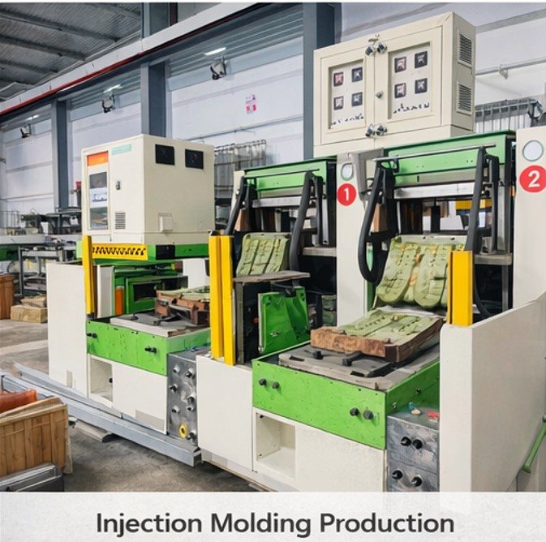
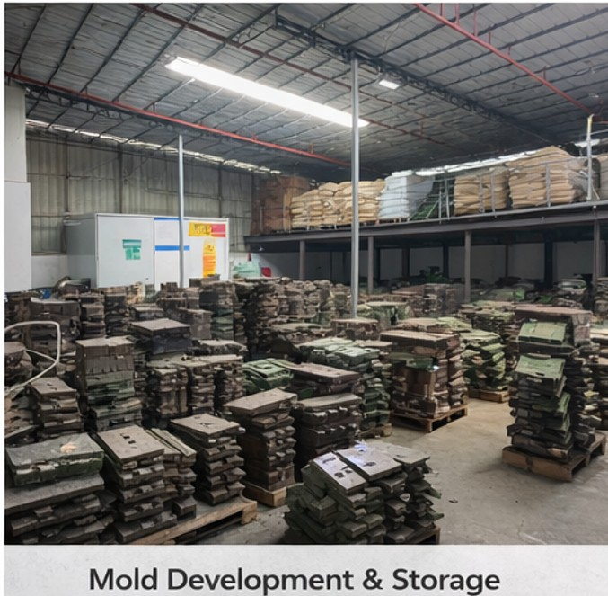
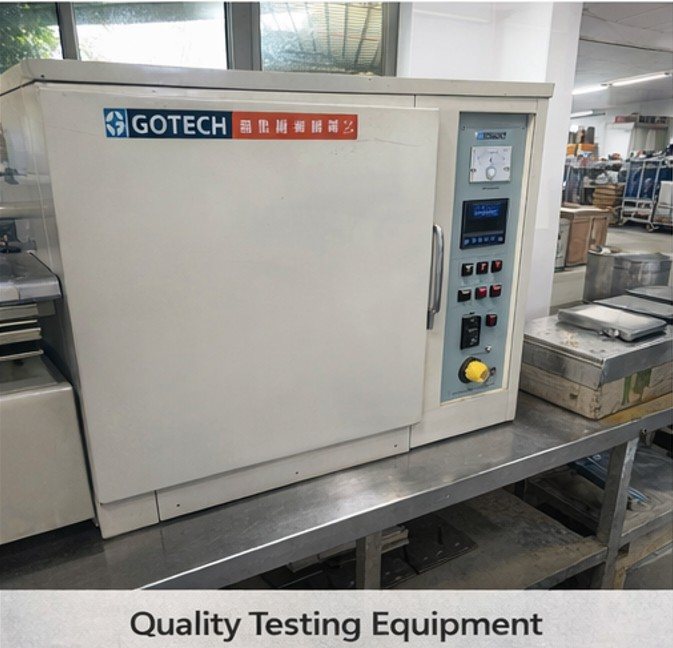
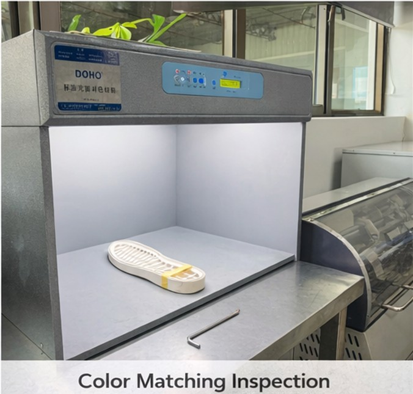

2-Color / 3-Color Injection • Lightweight TPR • OEM / ODM for footwear brands & factories
In-house mold development + 3D validation to reduce tooling risk and improve production stability.
Tooling Rework
Reduce modification cycles with mold review + 3D validation before final tooling.
2-Color Separation
Better color boundary design + bonding checks for 2C/3C injection outsoles.
Hardness Instability
Stable Shore control through material management and production discipline.
Production Delays
Front-load risk evaluation to avoid late changes and missed shipping windows.
Comfort-focused, flexible, stable rebound for casual / lifestyle footwear.
Dual-color molding for brand design language and visual differentiation.
Triple-color solutions with bonding validation and boundary stability checks.
Welt-style outsole with stitched-look design for fashion and casual footwear.
Pattern design support for grip needs across indoor/outdoor usage scenarios.
From concept to sampling to mass production with quality gates.
For search / sourcing:
We are a custom TPR outsole manufacturer in China, supporting 2 color injection outsole, 3 color TPR outsole, lightweight TPR sole, TPR welt outsole, and outsole mold development for OEM/ODM programs.
Result: better first-trial success rate and faster sample iteration.
For welt outsole structures, we review edge thickness, bonding interface and shrinkage control to prevent separation during flex and wear tests.

Injection Production
Stable output for OEM programs and color injection projects.

Mold Workshop & Storage
Tooling control for accuracy, tolerance and repeatability.

Quality Testing
Support for abrasion and basic performance validation.

Color Matching
Consistent color for multi-color outsole programs.
Do you sell stock TPR outsoles?
No. We focus on custom projects with mold development and OEM/ODM production.
Can you make 2-color / 3-color injection TPR outsoles?
Yes. We support multi-color injection with boundary design review and bonding validation.
What do you need for quotation?
Outsole drawing / photo, target market, expected MOQ, and timeline. A tech pack is best.
Do you support mold development?
Yes. In-house tooling enables better tolerance control and faster iteration for new projects.
Send your outsole drawing or project details. This page will redirect to a confirmation page after submission.
Prefer direct contact? leo.liu@solemakers.vip | WhatsApp: +86-137-1196-4075